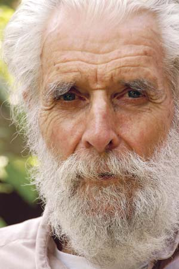

The Father Of Earth-Sheltered Design
Malcolm Wells says underground homes protect and preserve the Earth’s surface.
By Charles Higginson
October/November 2006
Malcolm “Mac” Wells has been called the father of modern earth-sheltered architecture, the guru of underground building and the gentle architect. Born in 1926 in Camden, N.J., he became an architect in 1953 and, by his own account, spent the next 11 years winning awards and earning lots of money by “spreading corporate asphalt.”
Around 1964, though, three events completely changed his approach to architecture. An underground house exhibit he saw at the New York World’s Fair “put a spark in my head.” On a visit to Taliesin West, Frank Lloyd Wright’s compound in Scottsdale, Ariz., he stepped into a small underground theater and found it delightfully cool and comfortable. Finally, he says, three men died who had been deeply important to him: John F. Kennedy, Pope John XXIII and Malcolm’s own father, John D. Wells. “That made a little more of an adult out of me,” he says. “It kicked me into getting serious about life.”
Serious thinking led him to conclude that the Earth’s surface was meant for living things rather than dead buildings and asphalt, and that buildings therefore should be underground. It meant building downward rather than upward. He became fascinated with the possibilities of underground and earth-sheltered construction, and soon was convinced that this was not just another way to build - it was the best, perhaps the only, way to build.
He tried to spread the word. In 1965, he published an article in Progressive Architecture that he now calls a “polemic against everything that had ever been built on the surface of the earth.”
In a 1971 article in Architectural Digest, he wrote, “The act of building, whether it involves giant hydroelectric dams or a single small home, is an act of land-destruction. Buildings destroy land for as long as they stand.”
That article sets out 15 properties of wild land that Wells thought buildings ideally should emulate: create pure air; create pure water; store rainwater; produce its own food; create rich soil; use solar energy; store solar energy; create silence; consume its own wastes; maintain itself; match nature’s pace; provide wildlife habitat; provide human habitat; moderate climate and weather; and be beautiful.
Wells’ writings soon began to motivate others. Steve Heckeroth, a Mother contributing editor, off-grid homesteader and an award-winning architect himself, still regards that 1971 article as a touchstone.
“As you might guess from the fact that I have saved the short article all these years,” Heckeroth says, “it is as precious to me as any love letter I ever received. Mac, more than any other person, has influenced the way I approach a design. I still ask the 15 questions.”
Rob Roy is another Wells disciple. Roy’s books explain low-cost earth-sheltered building methods, and he refers to Wells’ ideas frequently. “As Mac says, we’re paving and roofing this country to death, especially in the urban areas,” Roy says. “One of the main things is his advocacy of building on marginal land: Go to land that’s already been raped and build there. Mac built his first architecture office in a dump in Cherry Hill, N.J.” (See Roy’s article “Earth-sheltered Homes.”)
On Buildings, Baseball & Birds
Wells has written more than a dozen books on earth-sheltered building. They’re full of sketches, ideas, plans and photographs. His books are not typeset but are printed instead in his distinctive handwriting, which, along with his conversational tone, makes reading them an unusually engaging, personal experience. Considering the seriousness of his subject, his work contains surprising doses of humorous comments, whimsical sketches and light-hearted marginalia.
Although he’s best known for his work in earth-sheltered building, Wells also has published books on other subjects: There’s one on birdhouses and birdfeeders, another about sand castles. A prolific cartoonist, he’s also published a book of humorous “explanations” of baseball slang and has illustrated more than a half-dozen books for children. He has written articles for numerous magazines, including Mother Earth News.
A Modest, Optimistic Life
Today Wells lives in Brewster, Mass., where he and his wife, Karen, operate the aptly named Underground Art Gallery. Failing health forced him to cease offering architectural services in 2004. He says he holds no resentment regarding the slow pace of acceptance of his ideas. “Natural skepticism has helped rather than hurt,” he says. “It has kept us from leaping too fast into underground architecture. It makes people look more closely into claims that at first seemed far-fetched. But some of them aren’t: low heating bills, low cooling bills, low maintenance, quiet and - best of all - the restoration of a green world.”
Wells is famously modest. Asked to list accomplishments of which he’s proud, he says, “Besides the children, none yet. If I listen to the little band of troglodytes who have attached themselves to this underground idea so readily, I think I’m king of the world. But I know that my influence has been virtually imperceptible.”
Not everyone agrees. “Mac’s had a lot of influence,” Roy says. “He doesn’t realize the inspiration he’s been for so many people.”
Wells’ good humor springs from an optimism that’s perhaps surprising in someone who has spent his days contemplating ruined land. As he wrote in 2001 in Recovering America, “This has disappointed me now and then but I’m sure time is running out for land-killing projects, and I happily await their certain demise … Life, in other words, is sure to prevail in the long run.”
How to Build an Underground House, Malcolm Wells’ fourth book about underground architecture, remains a perennial favorite. Several of Wells’ other books are self-published and are available from Wells directly - for a catalog, write to him at 673 Satucket Road, Brewster, MA 02631.
|
 SHAREEN DAVIS/CAPE COD VOICE Malcolm “Mac” Wells, the father of earth-sheltered architecture. |
 MALCOLM WELLS Wells sketched this house in 1965, after having “a brilliant and original idea: Buildings should be underground!” |
|